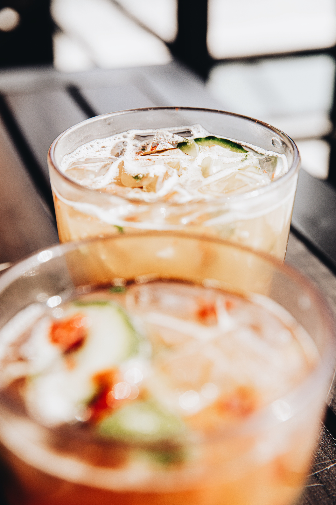

Cucumber Tea Spritzer

Cucumber Tea Spritzer
A great summer drink or just a nice refreshing mocktail - cucumber water is healthy too!
Ingredients
- 2 cups water
- ½ cup white sugar
- 2 black tea bags, or more to taste
- ice
- 1 cucumber, cut into 1/4-inch slices
- 5 cups sparkling water, or as needed
- 1 lemon
Steps
- Bring water to a boil in a kettle. Pour into a pitcher. Stir in sugar until it dissolves into a syrup. Add tea bags; let steep, about 5 minutes.
- Fill 5 glasses with ice cubes. Add some cucumber slices. Fill glasses 3/4 full of sparking water. Divide sweet tea evenly among glasses. Squeeze some lemon juice into each drink; stir.